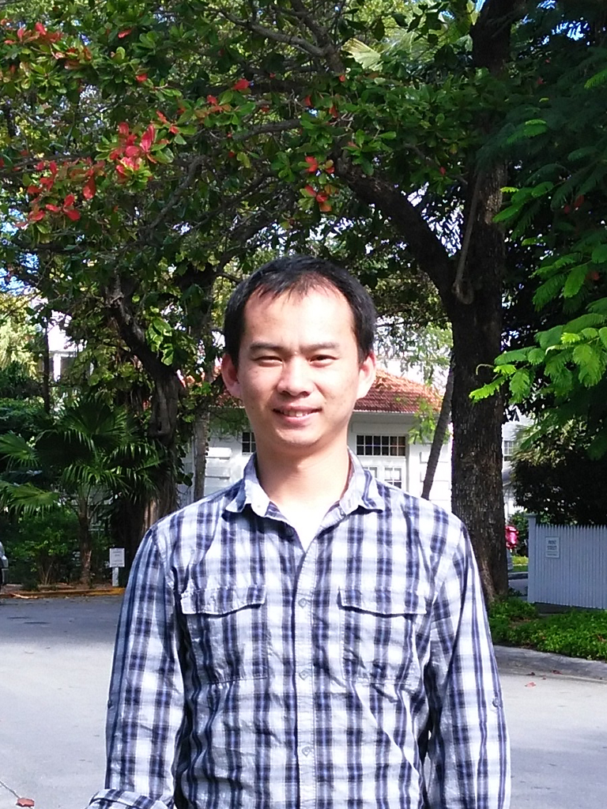

Liang Zhang's Personal Website
 Email: lz284@njit.edu
Email: lz284@njit.eduPh.D.
Advanced Networking Laboratory,
Department of Electrical and Computer Engineering,
New Jersey Institute of Technology, University Heights, Newark, NJ, 07102,USA.


Education
- Ph.D. 09/2014 ~ 05/2020 , Electircal and Computer Engineering (ECE), New Jersey Institute of Technology (NJIT), Newark, 07102, USA.
Advisor: Distinguished Prof. Nirwan Ansari
Dissertation: “Communications with Spectrum Sharing in 5G Networks via Drone-mounted Base Stations”, 04/20/2020.
- M.S. 09/2011 ~ 06/2014, Information and Communication Engineering, University of Science and Technology of China (USTC), Hefei, 230000, China.
Advisor: Prof. Zuqing Zhu
Dissertation: “Investigation of Dynamic Resource Allocation in Inter-Datacenter Networks over Optical Infrastructure”, 05/2014.
Liang Zhang [S’15, M’20] (lz284@njit.edu) received his M.S. degree in information and communication engineering, University of Science
and Technology of China (USTC), China, in 2014, and his Ph.D. degree in electrical engineering from New Jersey Institute of Technology (NJIT),
USA, in 2020. He is a recipient of the Hashimoto Prize in NJIT for the best doctoral dissertation in 2020, the Travel Grant Award from IEEE
GLOBECOM in 2016, the Best Paper Award at IEEE ICNC in 2014, the prize of the National Scholarship of Graduate Students in China in 2013.
Wireless Communications, Full Duplex, UAV, Mobile Edge Computing, Datacenter Network.

LIANG ZHANG
Postdoctoral research associate, 09/2020- present.
Ying Wu College of Computing
New Jersey Institute of Technology
Newark, NJ 07102
Phone: (973) 220-9658
Email: lz284@njit.edu
Short Bio
Research Interests
Honors and Awards